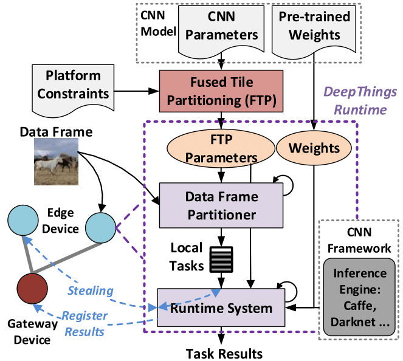
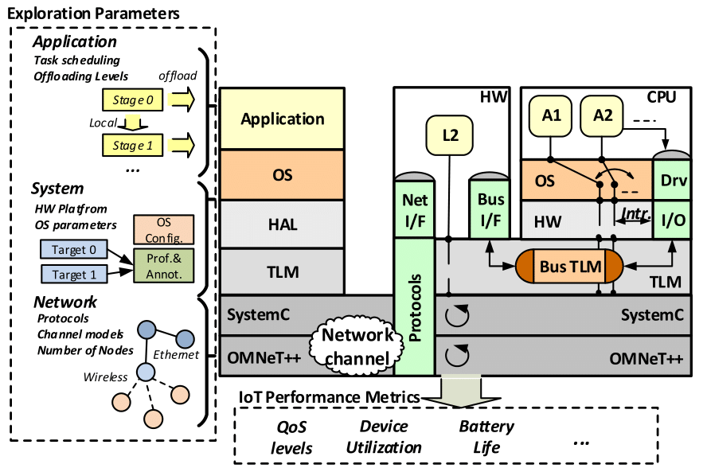
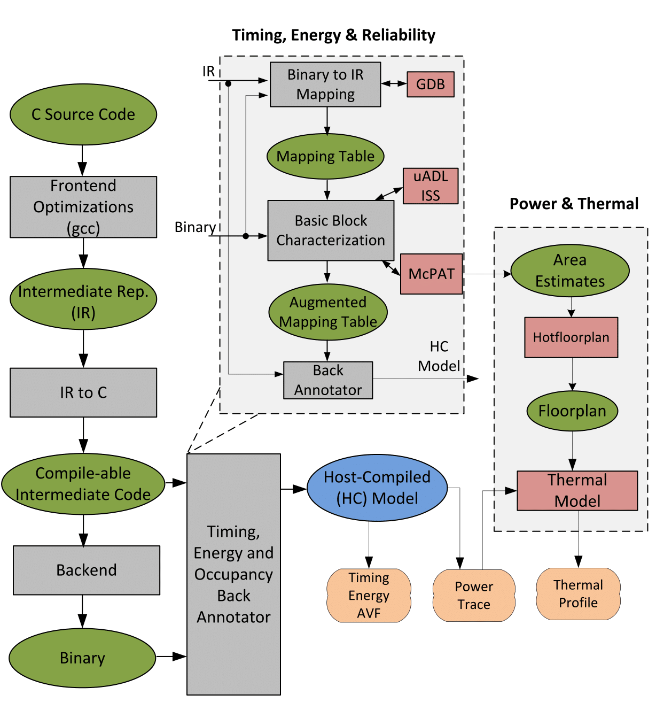

Zhuoran Zhao
 |
I am a sixth-year Ph.D. student in the Electrical and Computer Engineering (ECE) Department at the University of Texas at Austin. I work in System-Level Architecture and Modeling (SLAM) research group, under the supervision of Professor Andreas Gerstlauer. I received the B.S. in Electrical Engineering, Zhejiang University in 2012. My research interests are software/hardware performance modeling, simulation and optimization across full system stack with an emphasis in embedded/mobile domains. Phone: +1-512-751-1819 |
I am on the job market now!
Research Interests
My research interests include
Mobile/Edge Computing
Distributed Deep Learning Inference
System-level performance modeling and simulation
Operating System
Distributed Computing
Research Projects
|  | Distributed Adaptive Deep Learning Inference Framework (DeepThings): DeepThings is a framework for locally distributed and adaptive CNN inference in resource-constrained IoT edge clusters, which mainly consists of:
Z. Zhao, K. Mirzazad and A. Gerstlauer, "DeepThings: Distributed Adaptive Deep Learning Inference on Resource-Constrained IoT Edge Clusters," CODES+ISSS, special issue of IEEE Transactions on Computer-Aided Design of Integrated Circuits and Systems (TCAD), 2018. |
{kind=link}
|  | Network-of-Systems Simulator (NoSSim): A source-level networksystem co-simulation framework for rapid embeddedmobile system prototyping, which combines:
Z. Zhao, V. Tsoutsouras, D. Soudris and A. Gerstlauer, "Network/System Co-Simulation for Design Space Exploration of IoT Applications," in Proceedings of the International Conference on Embedded Computer Systems: Architectures, Modeling and Simulation (SAMOS), 2017. |
{kind=link}
|  | Retargetable Back-Annotator (RBA): A compile-time profiling and instrumentation tool for source-level system performance evaluation. Z. Zhao, A. Gerstlauer and L. K. John, "Source-Level Performance, Energy, Reliability, Power and Thermal (PERPT) Simulation," in IEEE Transactions on Computer-Aided Design of Integrated Circuits and Systems (TCAD), 2017. |
{kind=link}
Selected Publications
Zhuoran Zhao, Kamyar Mirzazad and Andreas Gerstlauer, "DeepThings: Distributed Adaptive Deep Learning Inference on Resource-Constrained IoT Edge Clusters," in CODES+ISSS, special issue of IEEE Transactions on Computer-Aided Design of Integrated Circuits and Systems (TCAD), 2018.
Zhuoran Zhao, Vasileios Tsoutsouras, Dimitrios Soudris and Andreas Gerstlauer, "Network/System Co-Simulation for Design Space Exploration of IoT Applications," in Proceedings of the International Conference on Embedded Computer Systems: Architectures, Modeling and Simulation (SAMOS), Samos, Greece, July 2017.
Zhuoran Zhao, Andreas Gerstlauer and Lizy K. John, "Source-Level Performance, Energy, Reliability, Power and Thermal (PERPT) Simulation," in IEEE Transactions on Computer-Aided Design of Integrated Circuits and Systems (TCAD), vol. 36, no. 2, pp. 299-312, February 2017.